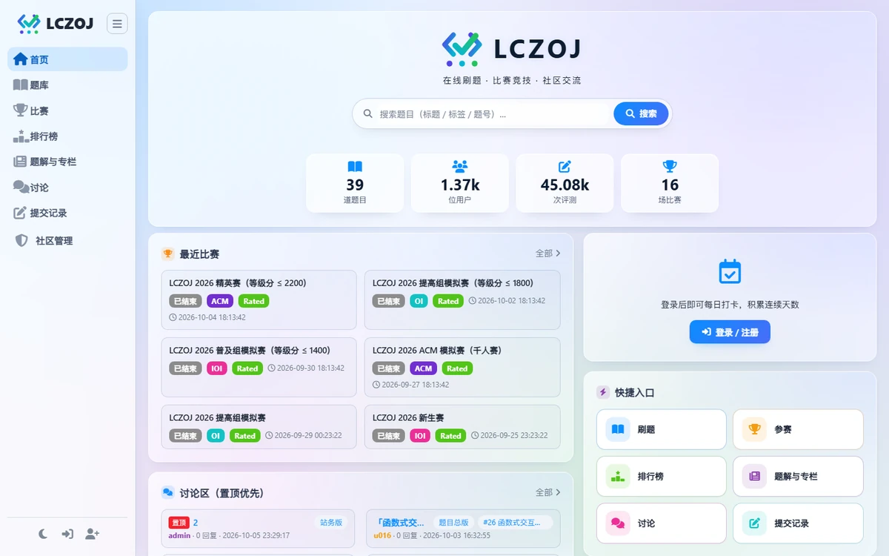
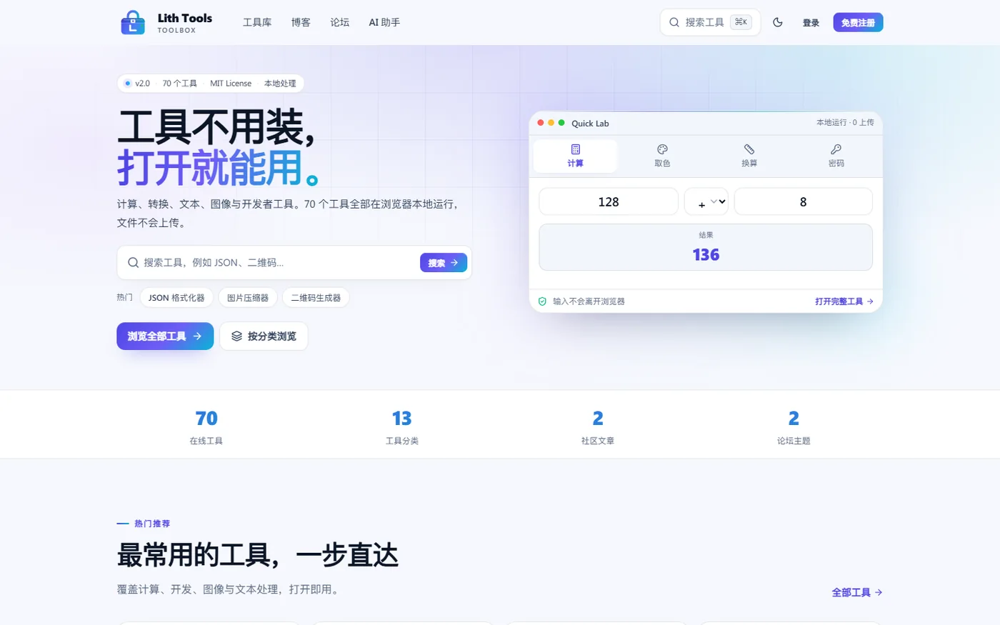

oj.lichenzhen.cn / 首页
v2.9.1

LCZOJ / 首页2026
SELECTED WORK
从工具箱到评测系统，都是我自己每天会用的东西。慢慢做，长期改。

LCZOJ / 首页2026

Lith Tools / 首页2026
70 个工具，打开就能用。
2024 年那个 PHP 练手项目，在 2.0 里被完整重写：70 个浏览器端工具、博客、论坛、 管理后台与 AI 助手。图片和文件在本地处理，不上传服务器；账户可以复用 LCZOJ 授权登录。
源码暂未公开，工具箱已上线，欢迎直接使用。
SITE MAP
四个站点，各做一件事。需要哪一个，从这里进去。
LCZOJ 与 Lith Tools 通过 OAuth 2.0 连在一起：一个账号，两个站点。
ABOUT
我是 Lichenzhen，常用 ID 是 Lith。 独立开发者，写 Web 全栈、工具与评测系统。
2024 年，我用 PHP 写了第一版 Lith Tools——一个给自己用的小工具箱。后来它长成 70 个工具、带博客和论坛的站点，又在 2.0 里被完整重写。LCZOJ 则从「想做一个自己的 OJ」 开始，一路做到四类题型、三套赛制和 OAuth 登录。
我做事的方式很朴素：先把边界想清楚，再把界面做简单。能放在浏览器里完成的， 就不上传服务器；能用一个进程跑起来的，就不引入第二套技术栈。
做东西的三条原则
能在浏览器里完成的处理，绝不绕一圈服务器。
不伪造转换结果，把限制写在用户看得到的地方。
少一点配置，多一点「下载完就能跑」。
常用技术
工具不应该要求用户
写在 Lith Tools 的设计原则里
先成为专家。
04 / NOW
不追热点，按自己的节奏把东西做完。
下面这些是最近真正在花时间的事。
正在做
LCZOJ 2.9.1 的评测体验与文档；Lith Tools 2.0 的收尾。
正在磨
更少的设置项、更清楚的报错、更快的首屏。
正在信
本地优先、开源、长期维护。慢一点没关系，做完就好。
CONTACT
不管是项目合作、技术交流，还是 LCZOJ / Lith Tools 的使用问题， 都欢迎直接找我聊聊。